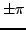
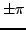

A closer examination of the accuracy of the MultiSine fitting procedure is provided by the MultiSine profiles. If the user specifies the keyword msprofs in the .ini file, SIGSPEC produces additional output files f#iteration#.dat, a#iteration#.dat, and p#iteration#.dat. The idea is to evaluate the rms residual through modifying a single parameter of a single signal component, keeping all other parameters constant. Performing this operation for the frequency of each component produces a set of rms-residual-vs.-frequency plots, all written to the file f#iteration#.dat. Correspondingly, the files a#iteration#.dat and p#iteration#.dat contain rms-residual-vs.-amplitude and rms-residual-vs.-phase plots. The frequencies are scanned around the best fit by
,  denoting the time interval width of the input time series, and sig referring to the signal component under consideration. The amplitudes are calculated from zero to twice the amplitude of best fit, and the phases in a range of  around the phase of best fit.
denoting the time interval width of the input time series, and sig referring to the signal component under consideration. The amplitudes are calculated from zero to twice the amplitude of best fit, and the phases in a range of  around the phase of best fit.
The keyword msprofs is followed by three integer values, the first denoting the number of data points an individual MultiSine profile shall consist of. The second parameter defines the number of iterations for which MultiSine profiles shall be generated. A negative number causes SIGSPEC to generate profiles for all iterations. The third parameter has to be a positive number and defines a step width. If it is set 1, a MultiSine profile is generated after each iteration, if it is set 2, after every second iteration (starting with f000002.dat, a000002.dat, p000002.dat), and so on.
The second parameter defines the number of iterations for which MultiSine profiles shall be generated. A negative number causes SIGSPEC to generate profiles for all iterations. The third parameter has to be a positive number and defines a step width. If it is set 1, a MultiSine profile is generated after each iteration, if it is set 2, after every second iteration (starting with f000002.dat, a000002.dat, p000002.dat), and so on.
The output files consist of seven columns:
For each signal component, the first row refers to the parameter value of best fit, as used in the result file.
Example. The sample project output uses the keyword msprofs in the file output.ini, namely
msprofs 10000 50 3
providing MultiSine profiles (f000003.dat, a000003.dat, p000003.dat), (f000006.dat, a000006.dat, p000006.dat),..., for a maximum of 50 iterations of prewhitening sequence. Each MultiSine profile is specified to contain 10000 data points. The number of significant components found in the time series output.dat is 33, so that the last set of MultiSine profiles (f000033.dat, a000033.dat, p000033.dat) refers to the final solution contained in the file result.dat. The MultiSine ptofiles for the primary signal component at 8.59 cycles per day are displayed in Fig.16.


Next: Preview
Up: MultiSine Output
Previous: MultiSine tracks
Contents
Piet Reegen
2009-09-23